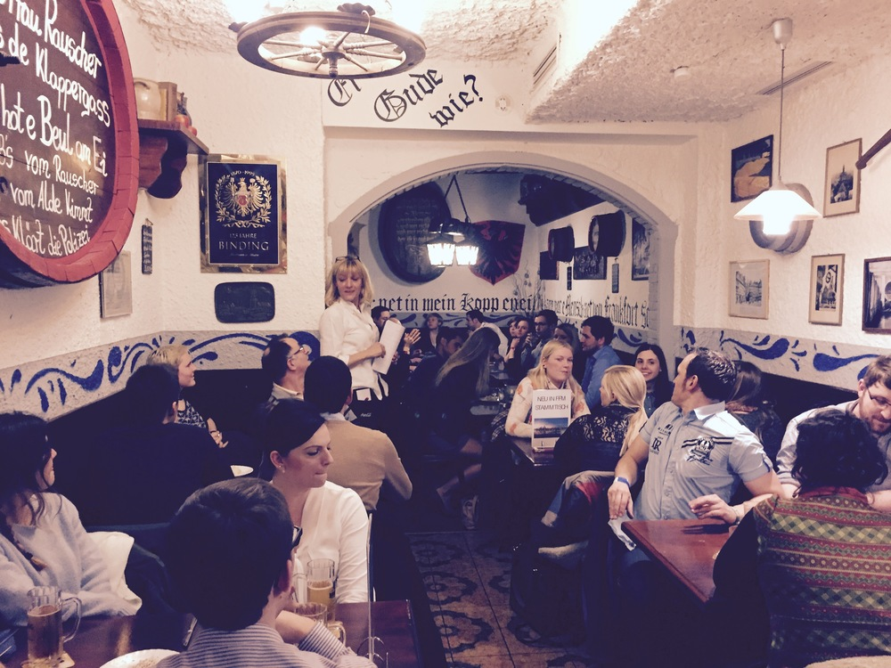

Was Gin- und Craft Beer-Fans schon lange können, ist jetzt auch für Apfelwein-Liebhaber möglich: Bei einem Tasting kann sich der Freund unseres „Nationalgetränks“ nun als echter Kenner erweisen – und so manches lernen.
Craft-Beer- und Gin- Tastings sind ja schon fast ein alter Hut. Ich persönlich konnte mich diesen bislang auch erfolgreich verwehren, bin ich nun kein ausgesprochener Freund dieser Getränke. Außerdem muss man ja nicht jeden Hype mitmachen, höhö. Vielmehr bin ich seit jeher ein bekennender Fan des Apfelweins. Als gebürtiger Hesse erinnere ich mich noch an meinen ersten „Schoppen“ heimlich im Wald mit den Freunden auf dem Dorf. Und nein, legal erwerben durfte ich das „Stöffche“ damals freilich noch nicht. Erst als „Panzersprit“ gemischt mit Cola, später dann am liebsten pur – ja, der Apfelwein hat mich durch meine Jugend in der hessischen Prärie begleitet, und auch heute noch halte ich tapfer die Fahnen des Apfelweins hoch und bin einem schönen, kalten Schluck aus dem Bembel selten abgeneigt.
Für all die Hessen – und solche, die es werden wollen -, die meine Leidenschaft teilen, gibt’s nun gute Nachrichten:
Bei einem „Apfelwein“-Tasting kann der durstige Frankfurter nun seiner Leidenschaft mit Gleichgesinnten frönen und sich als echter Kenner geben. Auch ich wurde neugierig auf ein solches Tasting – wie passend, dass ein Stammtisch der Facebook-Gruppe „Neu in Frankfurt“ im Rahmen einer solchen Verköstigung durchgeführt wurde. Klar, dass ich mich aufmachte ins Mekka des Apfelweins!
Im „Frau Rauscher“ in der altehrwürdigen Klappergasse - benannt nach der „Schutzpatronin des Schoppens“ - erwartete mich dann auch bereits eine bunte Truppe von ebenso neugierigen Neu-Frankfurtern und Schobbepetzern.

Ich persönlich hielt mich ja bislang bereits für einen ausgesprochenen Kenner, kann ich doch aus dem Stegreif mindestens zehn mir bekannte Apfelwein-Keltereien samt derer Produkte aufzählen. Und obendrauf weiß ich sogar, welcher Schoppen mir am besten mundet (Wetterauer Gold!), und welcher mir beim Genuss Brechreiz und Magentaumeln beschert (Heil Speierling!).
Als Sabine, Apfelwein-Expertin und Leiterin des heutigen Tastings, dann alle Anwesenden herzlich begrüßt hat und einen kurzen Vortrag zur Geschichte des "Stöffchens" - gehalten hat, bin ich allerdings eines besseren belehrt. Nein, ich hatte wirklich keine Ahnung bislang.
Ausgeschenkt werden im Laufe des Tastings ganze sechs verschiedene sorteinreine Apfelweine. Vor jeder Runde wird Wissenswertes zu den verwendeten Apfelsorten erzählt, und auch über die doch so unterschiedlichen Herstellungsverfahren wird berichtet. Von wegen, Keltern sei eben Keltern.
Den "Boskop" kenne ich immerhin noch aus dem Supermarkt, die Existenz von Apfelsorten wie der "Goldparmäne", dem "Trierer Weinapfel" oder gar der "Champagnerette" war auch mir dagegen bislang nicht geläufig. Auch, dass sich die empfohlene Trinktemperatur der verschiedenen Sorten deutlich unterscheidet (hier beschränkte sich mein Wissen bislang darauf, dass man heißen Apfelwein für gewöhnlich heiß konsumiert), überrascht mich.
Nach vollendeter Verköstigung habe ich dann auch meinen klaren Favoriten gefunden:
Der "Trierer Weinapfelwein" schmeckt so deutlich anders und besser als alle anderen Apfelweine, die mir bislang Gaumenfreuden beschert haben. Und ich freue mich, als ich erfahre, dass sämtliche ausgeschenkten Weine bei "Frau Rauscher" auch flaschenweise erworben werden können.
Ich hätte ja nicht gedacht, wie viel es zum Kehlengold zu berichten gibt. Und dachte ich, bislang mit meinem Fachwissen glänzen zu können, so wurde ich eines besseren belehrt. Ein Exkurs in die Welt des Apfelweins macht in geselliger Runde dann auch doppelt Freude - und kann jedem Frankfurter die Teilnahme nur wärmstens ans Herz legen!
Wer Interesse bekommen hat:
Die Tastings können gruppenweise bei "Frau Rauscher" gebucht werden. Kontakt aufnehmen lässt sich über deren Homepage.
Vielleicht findet eure nächste Geburtstags- oder Firmenfeier im Frankfurter Mekka des Kehlengoldes statt?
En gude Doscht wünscht euch bis dahin
MatzeFFM

Ersten Kommentar schreiben